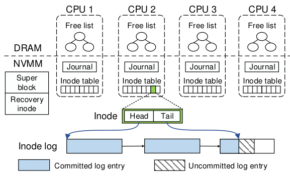
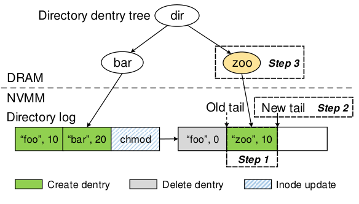
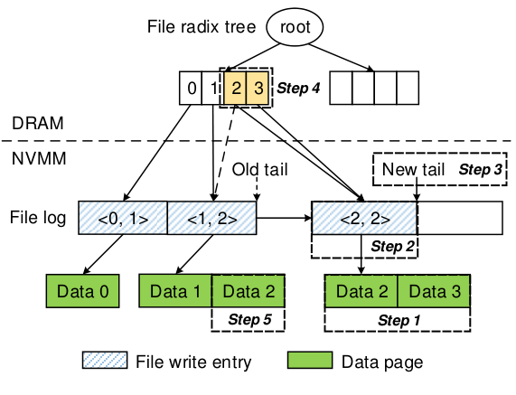
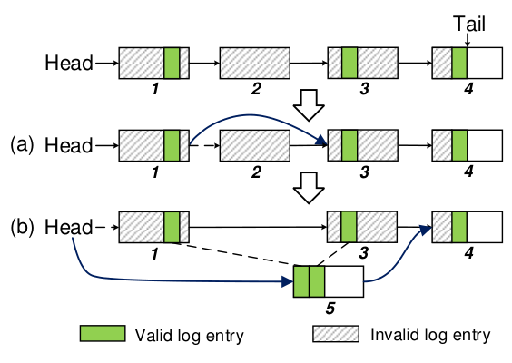
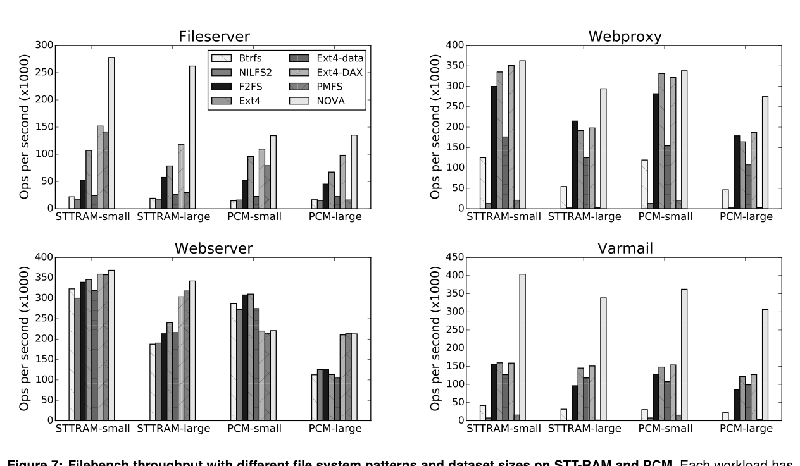
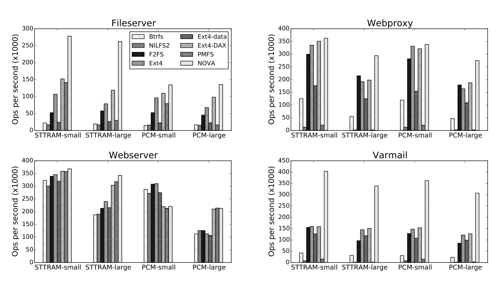
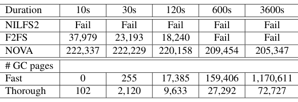
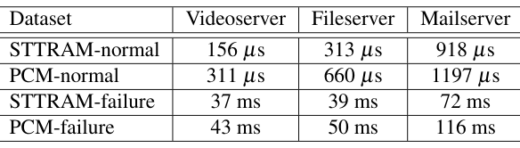

NOVA: A Log-structured File System for Hybrid Volatile/Non-volatile Main Memories
This page was written by an AI model to give a high-level overview of the paper. Please check the paper for detail: USENIX.
Emerging non-volatile memories (STT-RAM, phase change memory, resistive RAM, 3D XPoint) are about to sit on the processor's memory bus next to DRAM, giving software direct load/store access to persistent data at sub-microsecond latency. This hybrid DRAM/non-volatile main memory (NVMM) setting breaks two assumptions that conventional file systems rely on: disks guarantee atomic sector writes, and software overhead is hidden behind disk latency. On NVMM, software overhead can dominate, and the processor is free to reorder stores to memory, so a power failure can leave data in an inconsistent state unless the file system explicitly flushes caches and fences writes.
Existing techniques for atomicity do not fit well. Journaling writes data twice, once to the log and once in place, and is usually restricted to metadata to limit that cost. Shadow paging (copy-on-write over a tree) avoids double writes but can cascade updates from a changed leaf up to the root. Conventional log-structured file systems (LFS) convert random writes into sequential ones, which mattered for disks, but they need contiguous free regions and the garbage collection to keep supplying them is expensive; prior measurements had already shown LFS performing worse than journaling on NVMM. Existing NVMM-specific file systems each give up something: PMFS and Ext4-DAX journal only metadata and write data in place (not atomic), SCMFS gives no consistency guarantee at all, and Aerie does not support data atomicity or mmap.
NOVA's key idea is to adapt log-structuring to NVMM's actual strengths rather than disk's. Three observations drive the design: NVMM makes random access cheap, so a log no longer needs to be a single contiguous region, and log cleaning no longer needs to supply contiguous free space; search-friendly structures like trees are hard to implement correctly and efficiently as persistent NVMM structures, but are easy and mature as volatile DRAM structures (Linux's radix tree); and a single log, which made sense for a disk with one head, limits concurrency when random access is cheap, so NOVA gives every inode its own log.
Mechanically, each inode's log is a linked list of 4 KB NVMM pages that records only metadata; a single 64-bit atomic write to the log's tail pointer commits an append, so metadata updates for a single inode are atomic without journaling's double write. Operations that touch several inodes (create, unlink, rename) use a lightweight journal that records only log-tail pointers, at most a few inodes' worth of 16-byte entries. File data is never logged; writes go to newly allocated data pages via copy-on-write, and a DRAM radix tree per file maps offsets to the log entries that describe where the data lives, so stale pages can be reclaimed immediately instead of waiting for log cleaning.
On the Intel Persistent Memory Emulation Platform (PMEP), emulating both a DRAM-speed NVMM (STT-RAM) and a slower one (PCM), NOVA beats PMFS, Ext4-DAX, Ext4, Ext4 data-journal mode, Btrfs, NILFS2 and F2FS by 22% to 216x on write-intensive Filebench workloads, and by 3.1x to 13.5x over the two file systems (Btrfs and Ext4 data-journal mode) that give the same strong consistency guarantees. It also sustains stable throughput at 95% NVMM utilization for a full hour, where NILFS2 fails immediately and F2FS fails after 158 seconds, and it recovers 50 GB of data in 116 ms after a crash (over 400 GB/s) and in 1.2 ms after a clean shutdown.

Key takeaways
- NVMM's cheap random access removes the reason LFS needed contiguous free space, so NOVA stores each inode's log as a linked list of 4 KB pages instead of one contiguous region.
- Giving every inode its own log (instead of one global log) turns concurrent file access and crash recovery into independently parallelizable work across cores.
- NOVA never logs file data: writes go to copy-on-write data pages, and only a small metadata entry describing the write is logged, so logs stay short and stale pages are reclaimed immediately.
- Single-inode updates commit with one atomic log-tail write; multi-inode directory operations use a lightweight journal of just log-tail pointers, avoiding both journaling's double writes and shadow paging's cascading updates.
- Fast metadata lookup comes from DRAM radix trees rebuilt lazily from the NVMM logs, keeping the persistent structures simple while keeping search fast.
From per-inode logs to garbage collection and recovery
Why conventional atomicity techniques are a poor fit for NVMM, the three design decisions that follow from NVMM's characteristics, and how NOVA implements logging, directories, files, mmap, garbage collection, recovery and protection.
1 · Background: hybrid DRAM/NVMM memory
NVMM refers to emerging byte-addressable, non-volatile memories such as spin-torque transfer RAM (STT-RAM), phase change memory (PCM), resistive RAM (ReRAM) and Intel/Micron's 3D XPoint, placed on the processor's memory bus alongside DRAM. Direct Access (DAX, also called XIP) lets a file system map NVMM pages straight into an application's address space, bypassing the page cache and avoiding the extra copy that normal storage I/O requires. This exposes two problems a disk-oriented file system never had to solve: software overhead can now be comparable to or larger than memory latency, and the memory consistency model gives no guarantee about when a store actually reaches NVMM, only that caches eventually agree, so a crash mid-write can corrupt persistent state unless the software explicitly orders and flushes stores.
2 · Why journaling, shadow paging and conventional LFS fall short
| Technique | How it provides atomicity | Overhead on NVMM |
|---|---|---|
| Journaling | Write-ahead log replayed on failure | Writes data twice (log, then in place); usually limited to metadata only |
| Shadow paging | Copy-on-write pages spliced into the tree | A changed leaf can force a cascade of updates up to the root |
| Conventional LFS | Sequential log of all updates, cleaned for free space | Needs contiguous free regions; cleaning is expensive; prior work found LFS slower than journaling on NVMM |
Prior NVMM file systems each adopt one of these and pay for it, or relax guarantees to avoid the cost: BPFS uses shadow paging with a hardware mechanism for ordering, but large-tree operations (like moving a file between directories) still cascade. PMFS and Ext4-DAX journal metadata only and write data in place, so data updates are not atomic. SCMFS maps files to contiguous virtual regions for simplicity but gives no metadata or data consistency guarantee. Aerie implements the file system in user space for low latency but does not support data atomicity or mmap.
3 · The three decisions that follow from NVMM's characteristics
- Keep logs in NVMM, indexes in DRAM. Logs that support atomic append are simple to get right in NVMM, but a log is a poor structure for search. Rather than build a complex persistent search structure, NOVA keeps a radix tree in volatile DRAM, pointing into the log, and rebuilds that tree from the log when needed.
- Give every inode its own log. A single log made sense for a disk's single head; NVMM's fast random access removes that constraint, so per-inode logs let unrelated files update and recover concurrently without synchronizing on a shared log.
- Do not log file data. Cleaning a log is complex mainly because disks need large contiguous free regions; random access makes that unnecessary. NOVA logs only metadata describing a write and stores the data itself via copy-on-write, keeping logs short, recovery fast, and stale-page reclamation immediate.
4 · NVMM layout and per-CPU scaling
NOVA divides the NVMM region it manages into a superblock and recovery inode, per-CPU inode tables, per-CPU journals, and a shared pool of 4 KB log and data pages (shown in the paper's Figure 1, discussed in the Big Idea tab). Each CPU gets its own inode table, journal and NVMM free-page list, following a Hoard-like scalable allocator design, so that normal operation does not serialize on a single global lock. Inodes are 128-byte aligned and assigned round-robin across the per-CPU tables; a valid bit lets freed inodes be reused without shrinking the table. A red-black tree keeps each CPU's free list sorted by address in DRAM (not persisted during normal operation) for O(log n) deallocation and easy merging; on a clean shutdown the allocator state is saved to the recovery inode's log and restored at mount, and on a crash it is rebuilt by scanning inode logs (Section 9 below).
5 · Enforcing atomicity and write ordering
NOVA relies on the fact that modern processors make aligned 64-bit writes atomic, and it builds every higher-level guarantee out of that primitive plus three ordering rules: commit data and log entries to NVMM before updating the log tail; commit journal data before propagating the updates it describes; and commit a new version of a data page before recycling the old one. To commit a log append, NOVA writes the entry, flushes the affected cache lines (clwb), issues an sfence, issues a PCOMMIT to force the write out to the NVMM controller, issues a second sfence, and only then updates the tail pointer with an atomic 64-bit write. On platforms without these newer instructions, NOVA substitutes non-temporal stores (movntq) and clflush/sfence to get the same ordering.
Operations that span multiple inodes (create, unlink, rename) cannot commit with one tail update, so NOVA uses a lightweight journal: it first appends entries to each affected inode's log, then records the addresses and new values of their tail pointers in the current CPU's small journal buffer (committed as one transaction), propagates the tail updates, and finally marks the journal transaction complete. Because the journal only ever holds log-tail pointers, no POSIX operation needs more than 64 bytes of journal data (rename, the most complex case, touches at most four inodes). At most one journal transaction is open per core at a time, and the VFS layer's locking on the affected inodes keeps concurrent transactions from touching the same inode.
6 · Directory operations

A NOVA directory is its inode's log plus a DRAM radix tree keyed by the hash of each entry's name, with leaves pointing into the log. The log holds two kinds of entries: directory entries (dentries, carrying name, inode number and a timestamp used to atomically update the directory's mtime/ctime) and inode-update entries for operations like chmod. To create a file, NOVA initializes an unused inode, appends a create dentry to the directory's log, uses the per-CPU journal to atomically update the log tail and set the new inode's valid bit, and then updates the DRAM radix tree. Deleting a file appends a delete dentry (inode number set to zero) to the directory log and an inode-update entry (decrementing the link count) to the file's own log, committed together through the same journaling mechanism; a delete also marks the matching create dentry invalid so the garbage collector cannot resurrect the name by reclaiming only the delete entry.
7 · File writes and atomic mmap

A file's log holds inode-update entries and file-write entries; each write entry describes an update (offset, length, new size, timestamp) and points at the data pages it covers, and a DRAM radix tree maps file offsets to write entries. To perform a write, NOVA copies the new data into freshly allocated pages, appends a write entry (splitting large writes across several entries if a single run of contiguous free pages is not available, but always committing them with one tail update), updates the tail, and updates the radix tree; the superseded data page is returned to the free list immediately. A per-inode lock protects the log and radix tree during this sequence. Reads update the inode's access time with a single atomic 64-bit write and otherwise just look up pages through the radix tree.
Because NOVA reclaims stale data pages immediately, it cannot support ordinary DAX-mmap, where an application's writes land directly on the live NVMM data pages: the operating system can write back a subset of dirty mmap'd pages at any time, which is not atomic if the writeback is interrupted. Instead NOVA offers atomic-mmap: it maps replica pages, copies the file's data into them, and lets the application load and store to the replicas. An msync is then handled like a normal write: NOVA copies the replicas' contents to new data pages with movntq and commits the update atomically. This gives atomic mmap at the cost of the extra copy and the msync-time write; the paper notes true DRAM mmap could be made atomic by holding back the OS's dirty-page writeback, but leaves that as future work.
8 · Garbage collection

Because logs hold only metadata and are linked lists of pages, NOVA never needs to compact disjoint pages into a contiguous region, which is the usual source of LFS cleaning cost. A log entry is dead once it is superseded: a write entry pointing at pages that have since been overwritten, an inode-update entry whose field a later entry also updates, or a dentry explicitly marked invalid (the last entry in a log is always kept live, since it records the inode's latest ctime). Fast GC scans a log, and if every entry on a page is dead, unlinks that page from the list with no copying. While scanning, NOVA also tallies how much of the log is still live; if live entries are under 50% of the log, it runs thorough GC afterward, copying the live entries into a freshly allocated, compacted log and atomically swapping it in by updating the log's head pointer (leaving the still-attached tail pages untouched, so the tail pointer need not move).
9 · Shutdown and recovery
NOVA defers rebuilding an inode's radix tree and metadata until the inode is first accessed after mount (lazy rebuild), so a clean remount need not scan any logs at all; it only restores the NVMM free-page lists, which were saved to the recovery inode's log at the previous clean shutdown. After an unclean shutdown, recovery has two steps: first, NOVA walks each per-CPU journal and rolls back any transaction whose commit (dequeue reaching enqueue) did not finish; second, it starts one recovery thread per CPU to scan that CPU's inode table in parallel, walking each valid inode's log. For a directory inode it only needs the log's page list (to count occupied pages), not the entries inside; for a file inode it reads the write entries to find the data pages. The resulting bitmap of occupied pages rebuilds the free-page allocator. Per-inode, per-CPU logs make this scan parallel across both inodes and cores, and because file data is never logged, each log is short (roughly the number of extents in the file), so only a small fraction of NVMM has to be read.
10 · Protecting NVMM from stray kernel writes
Since the kernel maps all of NVMM into its own address space at mount, an errant kernel store anywhere could silently corrupt the file system. NOVA reuses PMFS's protection scheme: NVMM is mapped read-only by default, and whenever NOVA itself needs to write, it briefly clears the processor's CR0.WP bit (which lets ring-0 code write read-only pages), disables local interrupts for the duration (since CR0.WP is not saved across interrupts), performs the write, and restores CR0.WP. This "write window" needs no page-table or TLB changes, so it is cheap. NOVA is implemented in Linux kernel 4.0, using the kernel's existing NVMM hooks, and passes the Linux POSIX file system test suite; its source is public on GitHub. Evaluation numbers are discussed in the Evaluation tab.
Evaluation
What the paper measures, its key figures and tables as they appear in the paper, and what each one tells us.
All experiments run on the Intel Persistent Memory Emulation Platform (PMEP), a dual-socket Xeon system with special microcode and firmware that emulates NVMM latency and bandwidth (and the clflushopt, clwb and PCOMMIT instructions) on part of its DRAM. The platform is configured with 32 GB of real DRAM and 64 GB of emulated NVMM, in two settings: an STT-RAM-like config (DRAM-equivalent read latency and bandwidth, 200 ns PCOMMIT) and a PCM-like config (300 ns read latency, 1/8 of DRAM's write bandwidth, 500 ns PCOMMIT).
| What | Value in the paper |
|---|---|
| Platform | Intel PMEP, dual-socket Xeon, 2.6 GHz, 8 cores, 4 DDR3 channels; 32 GB DRAM + 64 GB emulated NVMM |
| NVMM configs | STT-RAM: 100 ns read, full DRAM write bandwidth, 200 ns PCOMMIT. PCM: 300 ns read, 1/8 DRAM write bandwidth, 500 ns PCOMMIT |
| Workloads | Single-thread create/append/delete microbenchmark (10,000 files, sixteen 4 KB appends each); Filebench fileserver, webproxy, webserver and varmail, each at a small (fits in DRAM page cache) and large dataset size; 30 GB fileserver at 95% NVMM utilization for 10s to one hour; recovery on videoserver, fileserver and mailserver datasets (50 GB each, varying file count and I/O size) |
| Baselines | PMFS, Ext4-DAX, Ext4 (default), Ext4 data-journal mode, Btrfs, NILFS2, F2FS; only Btrfs and Ext4-data give consistency guarantees as strong as NOVA's |
| Metrics | Per-operation latency (µs), Filebench throughput (operations/second), GC pages reclaimed, mount/recovery time (ms) |
NOVA has the lowest latency on basic file operations, and its software overhead is small

What it shows. The single-thread microbenchmark's create, append and delete latency (with fsync cost amortized across the appends) on STT-RAM and PCM, plus a breakdown of where NOVA's own time goes. NOVA has the lowest latency for every operation, beating the other file systems by 35% to 17x, and improving append performance by 7.3x over Ext4 data-journal mode and 6.7x over Btrfs, the two baselines with matching consistency guarantees. PMFS is NOVA's closest competitor on append and delete. NILFS2 performs poorly on create. In the breakdown, NOVA's own code accounts for only 21% to 28% of create and append latency; the VFS layer contributes about 49% of create latency on average, and copying data from the user buffer into NVMM takes about 51% of append time on STT-RAM. On PCM, delete latency rises 76% because NOVA must read the inode log (at PCM's higher read latency) to free its data and log pages.
What to take from it. NOVA's software path is thin enough that overall latency tracks the underlying NVMM's own latency more directly than other file systems do; this is presented as a sign of low overhead, but it also means NOVA benefits less than page-cache-backed file systems when the backing memory happens to be slow. The breakdown suggests that, on fast memories, the POSIX call path and the user-to-NVMM copy, not the file system's own logic, become the main cost.
Across four Filebench workloads, NOVA leads most and ties the rest, with the largest margins on write-heavy, large-directory workloads

What it shows. Throughput on fileserver, webproxy, webserver and varmail, each at a small dataset (fits in the DRAM page cache for non-DAX file systems) and a large one, on both STT-RAM and PCM. On the write-heavy fileserver workload, NOVA beats the others by 1.8x to 16.6x on STT-RAM and 22% to 9.1x on PCM for the large dataset, including 11.4x over Ext4-data and 13.5x over Btrfs on STT-RAM. On the read-heavy webproxy workload, NOVA matches Ext4 and Ext4-DAX on the small dataset and beats F2FS and Ext4-DAX by 36% to 53% on the large one; PMFS (linear dentry search) and NILFS2 (a non-scalable directory lock) do worse because webproxy puts all files in one large directory. On webserver (read-dominated, no directory operations), NOVA is roughly tied with other DAX file systems on the small, DRAM-cacheable dataset but 10% faster on average than Ext4-DAX and PMFS, and 63% faster than non-DAX file systems, on the large dataset; on PCM, non-DAX file systems are 33% faster on the small dataset thanks to DRAM caching, but drop 60% on the large one while NOVA's throughput stays stable. On varmail (many small files, mixed read/write), NOVA beats Btrfs by 11.1x and Ext4-data by 3.1x on average, and the rest by 2.2x to 216x.
What to take from it. NOVA's advantage is largest exactly where its design targets: many files, many metadata and directory updates, and a mix of reads and writes. On purely read-dominated, small-directory workloads with a dataset that fits in DRAM, page-cache-backed file systems close most of the gap, since the page cache is doing the same job NOVA's DAX access does. Both NVMM configurations show the same ranking; PCM's lower write bandwidth lowers NOVA's absolute throughput (for example, half that of STT-RAM on fileserver) without changing its relative lead.
At 95% NVMM utilization, NOVA keeps running for an hour with under 8% throughput decay; the other log-structured file systems fail

What it shows. Table 3 runs a 30 GB fileserver workload at 95% NVMM utilization on STT-RAM for durations from 10 seconds to one hour, comparing NOVA to NILFS2 and F2FS, and reports NOVA's fast-GC and thorough-GC page counts. NILFS2 fails to finish even the 10-second run. F2FS reaches 37,979 ops/sec at 10s but falls to 18,240 ops/sec by 120s (a 52% drop) and fails outright before the 600s mark. NOVA runs the full hour, starting at 222,337 ops/sec and ending at 205,347 ops/sec, a drop of less than 8%, while outperforming F2FS by 5.8x at the point both are measured. Fast GC reclaims only 11% of stale pages by the 30s mark but grows to account for 94% of all reclaimed pages by the one-hour mark, with thorough GC handling the rest.
What to take from it. The paper's central garbage-collection claim, that reclaiming stale data pages immediately and keeping logs short makes cleaning cheap, holds up under sustained near-full-utilization write pressure, which is exactly the regime where conventional LFS cleaning cost shows up. Over time, the cheap, no-copy fast GC does almost all the work, with the more expensive compacting thorough GC needed only for a shrinking fraction of pages.
Recovery is sub-millisecond after a clean shutdown and tens of milliseconds after a crash, scaling with file count and fragmentation, not dataset size

What it shows. Table 5 reports mount time after a normal shutdown and after a simulated power failure, for three 50 GB datasets with different file counts and I/O sizes (videoserver: 400 files, 1 MB I/O; fileserver: 50,000 files, 64 KB I/O; mailserver: 400,000 files, 16 KB I/O, per Table 4). After a normal shutdown, recovery is uniformly about 1.2 ms, since NOVA restores the saved allocator state without scanning any logs. After a crash, recovery ranges from 37 ms (videoserver, STT-RAM) to 116 ms (mailserver, PCM); times rise with more files (more logs to scan) and with smaller I/O sizes (more fragmented, longer per-file logs), and PCM is consistently slower than STT-RAM because recovery reads logs at the NVMM read latency. The paper highlights 50 GB recovered in 116 ms, over 400 GB/s effective bandwidth, as the worst case measured.
What to take from it. Because data pages are never logged, each inode's log is short (on the order of its number of extents), so crash recovery scans a small fraction of a 50 GB dataset rather than the whole thing; the per-CPU, per-inode log layout also lets recovery scan in parallel across both cores and files. The scaling with file count rather than dataset size is the direct, expected consequence of that design, not a separate result.
FAQ
Q·What does "NOVA" stand for?▾
NOn-Volatile memory Accelerated. The name signals that the file system is designed around NVMM's characteristics rather than adapted from a disk-era design.
Q·Isn't NOVA just another log-structured file system like the ones built for disks or SSDs?▾
It reuses the idea of logging updates instead of updating in place, but changes what gets logged and how. Disk-era LFS needs long contiguous runs of free space and pays heavily to maintain them, because disk performance depends on sequential access. NOVA's logs are linked lists of 4 KB pages scattered anywhere in NVMM, because NVMM's random access is cheap; it also never logs file data, only metadata, which conventional LFS does log. Those two changes are what let NOVA's garbage collection stay cheap even near-full, where the paper shows NILFS2 and F2FS degrade or fail.
Q·Why does each inode get its own log instead of one log for the whole file system?▾
A single shared log forces every update, from any file, to serialize through one structure, which made sense for a disk with one read/write head but wastes NVMM's ability to do many random accesses concurrently. Per-inode logs let unrelated files be read, written and recovered in parallel, and keep each individual log short, since it only has to describe updates to one file.
Q·How does NOVA avoid journaling's double-write cost?▾
For a single inode, there is nothing to coordinate across logs, so NOVA just appends the update to that inode's own log and commits it with one atomic 64-bit write to the log's tail pointer; the data is written once, to the log, not once to a journal and again in place. True journaling is reserved for the rarer case of operations spanning multiple inodes, and even then NOVA's journal holds only tiny log-tail pointers, not the actual metadata or data being changed.
Q·If file data isn't in the log, where does it live, and how is a write still atomic?▾
New data is written to freshly allocated copy-on-write pages elsewhere in NVMM. The log only gets a small "write entry" recording where that data is and what it means for the file (offset, length, new size, timestamp). The write becomes effective the instant the log's tail pointer is atomically updated to include that entry; before that instant, the old data and old metadata are both still intact.
Q·Why keep search structures in volatile DRAM if NVMM is persistent?▾
A log is a simple structure to make persistent and atomic, but it is slow to search (you would have to scan it). Trees and other search-friendly structures are hard to implement correctly as crash-safe, persistent NVMM structures. NOVA sidesteps that difficulty by keeping only the log in NVMM and rebuilding a DRAM radix tree (Linux's existing, well-tested implementation) that points into the log, to get fast lookups without needing a new persistent data structure.
Q·What happens to the DRAM radix trees if the system crashes?▾
They are lost, along with all other DRAM state, but that is fine because they are only a cache over the logs. On recovery, NOVA rebuilds a file's or directory's radix tree by scanning its log, and it does this lazily, only the first time that particular inode is accessed after mount, rather than up front for the whole file system.
Q·Why can't NOVA support ordinary mmap the way DAX file systems normally do?▾
Normal DAX-mmap lets an application's stores land directly on the live NVMM data pages, and the OS can write back a subset of dirty pages at any time; if that writeback is interrupted by a crash, the file ends up partially updated, which breaks atomicity. Because NOVA already relies on reclaiming the old copy of a page immediately after a copy-on-write update, it instead maps replica pages to the application and treats msync like a logged write, trading an extra copy for an atomicity guarantee ordinary DAX-mmap does not have.
Q·How is NOVA protected from an accidental stray write by the kernel itself?▾
NVMM is mapped read-only in the kernel's address space by default. When NOVA itself needs to write, it clears the CPU's CR0.WP bit to temporarily allow writes to read-only-mapped pages, disables local interrupts (since this bit does not survive an interrupt), performs the write, and restores the protection. This is the same scheme PMFS uses, and it avoids touching page tables or the TLB, so it is cheap.
Q·Does NOVA need special hardware?▾
It assumes 64-bit aligned stores are atomic (true on existing processors) and is written to use Intel's proposed clflushopt, clwb and PCOMMIT instructions for efficient cache flushing and durability ordering, falling back to older clflush/movntq/sfence sequences when those are unavailable. The evaluation itself runs on an emulation platform (PMEP) that approximates these instructions and NVMM timing on modified DRAM, not on a real NVMM device.
Q·How does NOVA compare to Btrfs and Ext4's data-journal mode specifically?▾
Those are the only two baselines in the evaluation that provide data consistency as strong as NOVA's (the rest journal metadata only or provide no guarantee). NOVA still outperforms them substantially: 3.1x to 13.5x in write-intensive workloads, and up to 11.4x and 13.5x respectively on the fileserver workload, which the paper presents as the fairest comparison since it is not winning only by relaxing guarantees.
Q·What is left unaddressed or future work in the paper?▾
The paper notes that making ordinary DRAM mmap atomic (by holding back the OS's dirty-page writeback) is possible but left for future work; it evaluates only STT-RAM-like and PCM-like emulated timings, not real NVMM hardware or other candidate technologies; and it does not present a direct multi-core throughput scaling experiment despite per-CPU structures being a stated design goal.